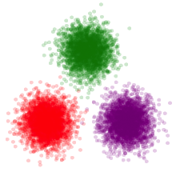

Distributions.jl
Distributions Package
Getting Started
Type Hierarchy
Univariate Distributions
Truncated Distributions
Multivariate Distributions
Matrix-variate Distributions
Mixture Models
Distribution Fitting
Create New Samplers and Distributions
Search
Search
Search
Number of results:
loading...